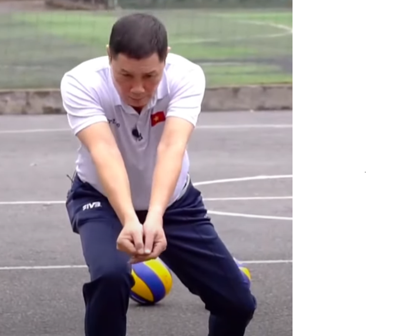
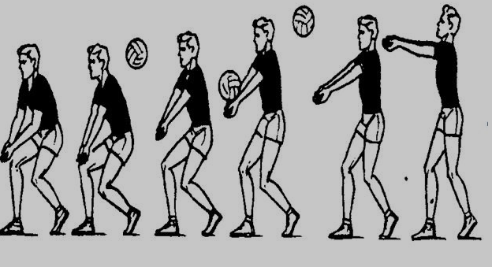

HƯỚNG DẪN CÁCH ĐỆM BÓNG CHUYỀN
I. Chuẩn bị:
Bước 1: Đứng ở vị trí thích hợp, đối diện với hướng bóng bay.
Bước 2: Cầm tay đúng tư thế: Đặt tay phải hoặc tay trái lên trên, ngón cái hướng về phía trước, các ngón còn lại hướng xuống dưới.
Bước 3: Đặt cổ tay thẳng hàng với mặt đất.

II. Kĩ thuật đệm bóng:
Bước 1: theo dõi bóng: Dùng mắt theo dõi bóng và dự đoán điểm rơi.
Bước 2: Di chuyển: Đi tới vị trí thích hợp để đệm bóng.
Bước 3: Cúi xuống: Đặt đầu gối hơi cong, chuẩn bị đệm bóng.
Bước 4: Đệm bóng: Dùng mu bàn tay đệm bóng.
Bước 5: Đẩy bóng lên: Sử dụng cổ tay và bàn tay đẩy bóng lên.

III. Lưu ý khi đệm bóng:
1. Giữ tư thế cân bằng.
2. Đừng để bóng chạm đất.
3. Đệm bóng nhẹ nhàng.
4. Thực hành thường xuyên để cải thiện kĩ năng.
VI. Các loại đệm bóng:
1. Đệm bóng trước: Đệm bóng khi bóng đang bay về phía trước.
2. Đệm bóng trên cao: Đệm bóng khi bóng đang ở trên cao.
V. Lợi ích khi đệm bóng tốt:
1. Cải thiện kĩ năng kiểm soát bóng.
2. Tăng cường sự tự tin.
3. Phát triển kĩ năng phối hợp.
VI. Các nguồn tham khảo:
○ Xem video hướng dẫn trên YouTube.
○ Thực hành với huấn luyện viên hoặc đồng đội.
○ Đọc sách hướng dẫn kỹ thuật bóng chuyền.